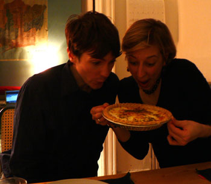

Quiche party
I convinced Emily to come over for dinner tonight after happy hour, which took place at Union Square Wines & Spirits followed by Cedar. We wanted to go to Splash, but they are closed down again. So we spent about 45 minutes drinking kosher wine from Israel in the salon at the wine store. It was nice and not at all snooty, and I even bought a silky bottle of white wine. From there we went to have a pitcher at Cedar, and then I made a quiche of ham, Gruyère, and caramelized onions, for which I was able to use a good bit of ham left over from my croques monsieur last week. Look how people enjoy themselves at my table:

Comments
I can’t believe you used the jowl-shot. We’ll talk about this later.
I know, not the greatest photo of Nathan or I – however, I WAS feeling pretty excited about that quiche- Leland is a certified quiche queen. With heavy cream, gruyere and thyme, I was dazzled. Way better than any quiche I’ve ever made.
Enough with the quiche already! And Nathan, if you want jowls try being my age; you look great and so does your friend.
Aw, thanks Mrs. P! I do think it’s just a trick of the light.
Oh look, our new huge map of Barcelona in the background, and the powerbook recording The O.C.! Everyone, please direct your attention there.
Mommy says no more quiche, and I shall obey. :(
I didn’t say you should stop MAKING quiche, I just suggested perhaps other topics for the blog…
I got bullied into it. Emily said it was so delicious that I had to post it so she could write a comment.
Add a comment